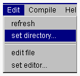
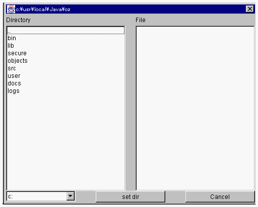

プロジェクトディレクトリを設定する
プロジェクトを新規に作成したら、次にそのプロジェクトとプロジェクトディレクトリのバインドを行う必要があります。プロジェクトディレクトリに新規に開発するクラスのソースファイルを格納します。

- １．プロジェクトマネージャの Edit メニューから set directory メニュー項目を選択してください。

- ディレクトリ選択ウィンドウが開かれます。このウィンドウの左側はディレクトリ選択エリアです。1つのディレクトリに含まれるすべてのディレクトリが表示され、ダブルクリックによって表示ディレクトリを移動することができます。..右側は拡張子.oz
のファイルを表示するエリアです。

２．このウィンドウでディレクトリを選択しset dir ボタンをクリックしてください。プロジェクトとディレクトリがバインドされ、プロジェクトマネージャの
Project Directory: の表示エリアにそのディレクトリの絶対パス名が表示されます。
そのディレクトリに拡張子が .oz のファイルが含まれていると、ProjectFiles
にリストされます。
現在、reflection が正しく行われない場合もあるので、プロジェクトファイルを最新表示することをお勧めします。
(c) 1996-1998 IPA, ETL, AT21, FSIABC, FXIS,
InArc, MRI, NUL, SBC, Sharp, TEC, TIS. All rights reserved.